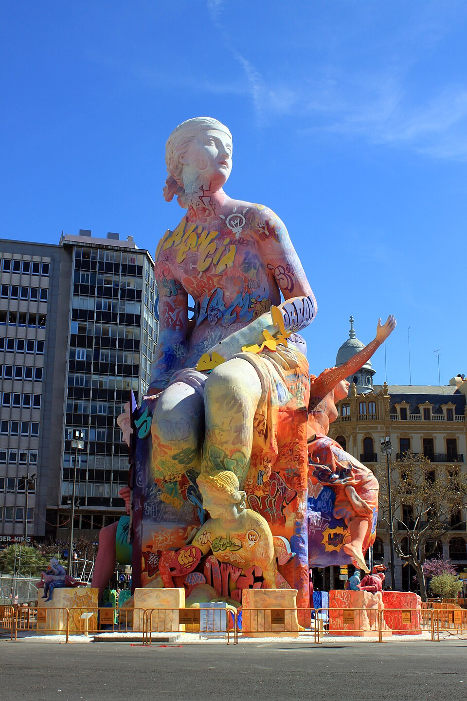
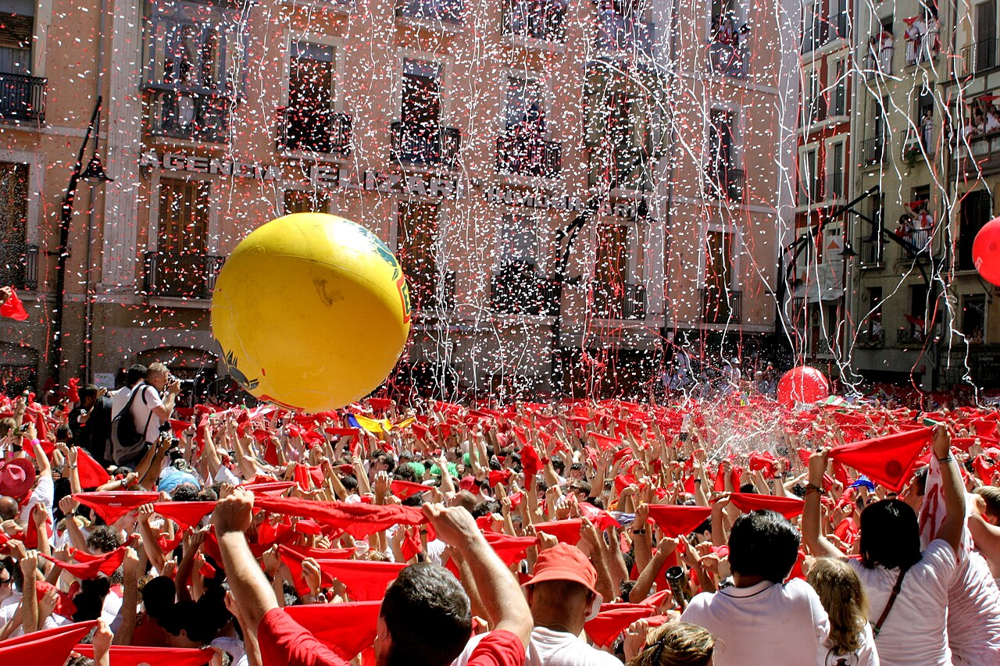
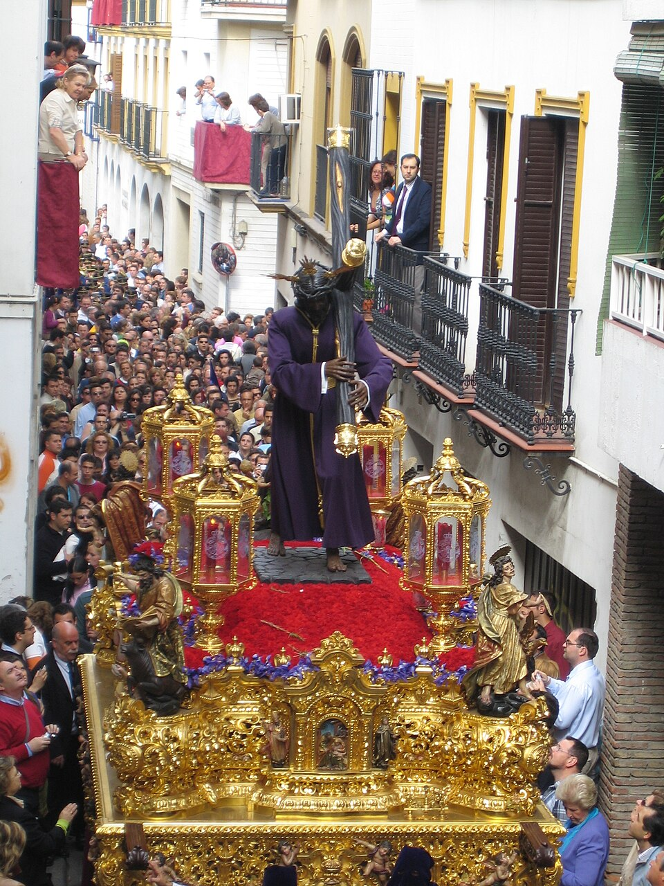
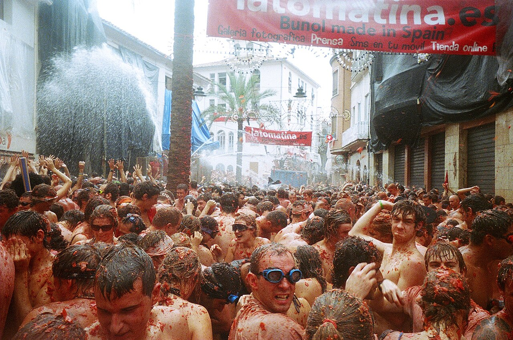

VALENCIA
ラス・ファジャス（火祭り）
バレンシアとその周辺で春に行われる火祭りです。花火や爆竹が街をにぎわせ、火をめぐる伝統が地域の人々に受け継がれています。
街を彩る祭りと、各地で受け継がれる伝統行事を紹介します。

バレンシアとその周辺で春に行われる火祭りです。花火や爆竹が街をにぎわせ、火をめぐる伝統が地域の人々に受け継がれています。

ナバラ州のパンプローナで夏に行われる祭りです。牛追いで知られるほか、巨大人形のパレードや音楽、さまざまな催しで街がにぎわいます。

復活祭の前の一週間に、スペイン各地で宗教行事が行われます。地元の信徒団体が宗教像を載せた山車を運び、音楽や衣装にも地域ごとの伝統が表れます。

バレンシア州のブニョールで行われる、トマトを投げ合う祭りです。さまざまな国から参加者が集まり、街がトマトで赤く染まります。